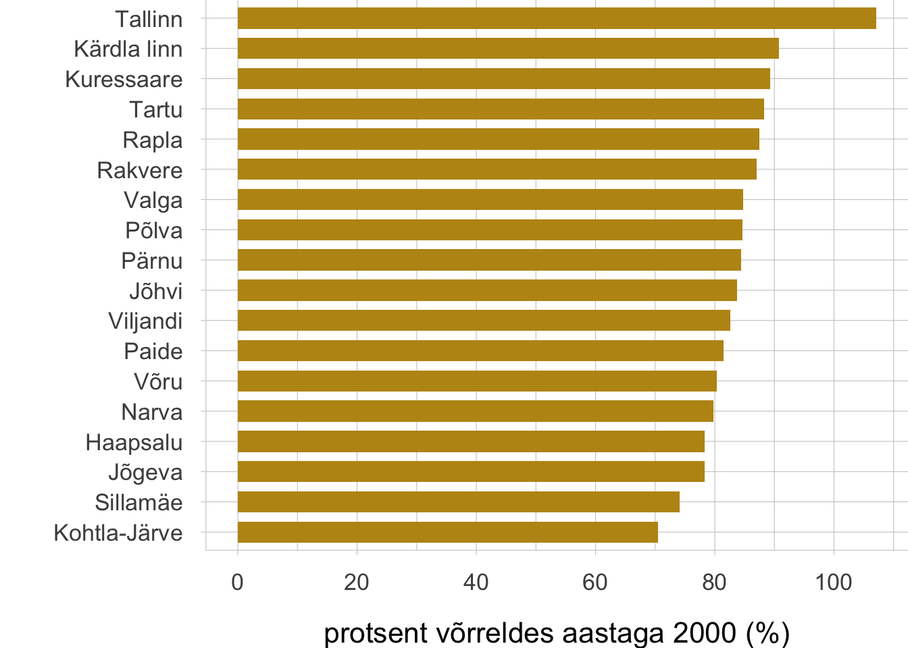

Sissejuhatus
Põhisõnumid
- Säiliva keskustevõrgu kokkuleppimine ja hoidmine võimaldaksid elada üle kogu riigi, ka ääremaal.
Kui enamik Eesti keskustest jätkuvalt kahanevad, ei ole tulevikus võimalik elada kõigis Eesti piirkondades. Ääremaastumine ei ohusta ainult maakohti, põhiteenused on kadumas maakonnalinnadest, kahanevad ka regioonikeskused. Ääremaastumist võimendab maapiirkondade ja väikelinnade häbimärgistamine.
- Eesti kaugemad linnad ja regioonid on kahekordses ääremaa positsioonis; sellest aitaks välja tulla seesmiselt ja rahvusvaheliselt hästi ühendatud asustussüsteem.
Eesti äärealad asuvad kaugel nii Eesti suurematest linnadest kui ka Euroopa keskustest. Riigi suured rahvusvahelised taristuprojektid on olulised, kuid kasu neist on vaid siis, kui sellest võidab kogu riik. Autopõhisest liikumisest üksi ei piisa, auto teeb ühe osa inimesi liikuvateks, kuid isoleerib teised (nt eakad, noored ja lapsed).
- Eeslinnaline ja maaline elulaad vajab (ümber)mõtestamist, praegune planeerimata eeslinnastumine ja ääremaa kahanemine üheülbastab elukeskkonda.
Praegune eeslinn lõhub avaliku ruumi linnas ning ignoreerib avaliku ruumi vajadust eeslinnas. Samuti käiakse eeslinnaaladel loodus- ja kultuurmaastikega ümber pillavalt. Kahanevas maakeskkonnas on järjest vähem maaliselt elavaid inimesi, kelle elulaad seostuks otseselt traditsioonilise loodus- ja kultuurmaastiku kujundamisega.
Lähtekohad
Selles peatükis laiendame avaliku ruumi mõistet kogu Eesti asustussüsteemile. Räägime Eesti inimeste elukeskkonna kvaliteedist asustussüsteemi eri osades. Üks peatüki märksõnu on elukeskkondade mitmekesisus. Suhteliselt väikese rahvaarvu ja territooriumi kohta on elukeskkondade valik Eestis lai ja see on omaette väärtus. Rääkides asustussüsteemist kui avalikust ruumist, peame siin peatükis silmas õigust ruumile – kõigi inimeste võimalust teha oma valik paljude elukohtade vahel nii, et peamised elamist võimaldavad teenused ja hüved oleksid kättesaadavad. Avame avaliku ruumi mõiste demokraatlikku ühiskonda iseloomustava kahe teineteist täiendava teema kaudu, milleks on ligipääsetavus ja koha kättesaadavus.
Suhteliselt väikese rahvaarvu ja territooriumi kohta on elukeskkondade valik Eestis lai ja see on omaette väärtus.
Eestis on ühtlustumas nii elukeskkonnad kui ka elulaadid. Loodus- ja kultuurmaastikke on viimase kolme kümnendi jooksul vaesestanud põllualade täisehitamine, põldude metsastumine ja intensiivistuv metsaraie. Muutunud on maalise ja linnalise elukeskkonna tähendus. Inimeste soov elada väljaspool tihedat linna on toonud maastikupilti eeslinnaasumid kui linna-maa hübriidvormi. Kogu asustussüsteemis on tööealine elanikkond valdavalt rännanud suuremate linnaregioonide suunas, kus asuvad koolid ja töökohad. Maal on põllumajandushõive vähenenud ja järjest vähem inimesi tegelevad nende „maaliste“ tegevusaladega, mis on ajalooliselt maamaastikke kujundanud.
Autostumine ja hea maanteevõrk on teinud inimesed liikuvamaks, tuues kohad üksteisele tunnetuslikult lähemale. Sellest võidavad need inimesed, kellele autoga liiklemine on enesestmõistetav, teiste (nt eakad, lapsed, noored) ühistranspordist sõltuvate elanikerühmade jaoks on üksnes autopõhine liikuvusmudel ebasoodne suundumus. Muutused majanduses ja keskustevõrgus on suurendanud liikumisvajadust. Võimalusi elukeskkondade vahel valida piirab see, kuivõrd on töö ja eluks vajalikud teenused elukoha läheduses olemas. Veel kolm kümnendit tagasi oli enamik maapiirkonna töökohti majandikeskustes, mis toimisid ka esmaste teenuskeskustena. Praegu tähendab suurematest linnadest eemal elamine pendelrännet tihti suure vahemaa taha, sest isegi maakonnalinnadest on paljud funktsioonid (head koolid, arstiabi ja teised igapäevaseks toimimiseks vajalikud teenused) kadunud.
Autostumine ja hea maanteevõrk on teinud inimesed liikuvamaks, tuues kohad üksteisele tunnetuslikult lähemale. Samas on see ebasoodne suundumus peamiselt ühistranspordist sõltuvatele elanikerühmadele, näiteks eakatele ja noortele.[a]
Autostumine ja hea maanteevõrk on teinud inimesed liikuvamaks, tuues kohad üksteisele tunnetuslikult lähemale. Samas on see ebasoodne suundumus peamiselt ühistranspordist sõltuvatele elanikerühmadele, näiteks eakatele ja noortele.
Maapiirkondade kahanemine on üleeuroopaline suundumus (ESPON 2017; Hörnström ja Perjo 2015; Leick ja Lang 2018). Tegemist on nõiaringiga, mida on keeruline katkestada: töökohtade kadumisel lahkuvad piirkonnast inimesed, siis pole enam kriitilist tarbijate hulka teenustele, kaovad teenustöökohad ja tekib surve eluliselt vajalike teenuste pakkumine lõpetada. Nii on olnud ka Eestis. Nõukogude aja lõpp, põllumajanduse õitsenguaeg, oli maapiirkondade ja ääremaa väikelinnade kuldajastu (Marksoo 1985). Pärast seda on ääremaal üles kasvanud noored asunud õppima ja tööle linna (Leetmaa ja Väiko 2015) või väljapoole Eestit (Tiit 2015, lk 60), kodukohta tagasi tulekuks põhjusi aga napib. Eriti kiiresti on kahanemine ääremaal toimunud Kesk- ja Ida-Euroopa riikides. Kui 2004. aasta laienemisringi eelsetes 15 Euroopa Liidu liikmesriigis kahanes perioodil 2001–2011 rahvastik veidi enam kui 35% maaomavalitsustes, siis uutes Euroopa Liidu riikides oli kahanevate maaomavalitsuste osa keskmiselt 60%, Baltimaades koguni üle 80% (ESPON 2017, lk 4).
Kahanemine ääremaal ei jää ainult kaugete maakohtade mureks, järgmisena haarab see ääremaal asuvad keskused ja terved regioonid (ESPON 2017, lk 4–5). Ka Eestis on jälgitav asustussüsteemi alumiste astmete järkjärguline tühjenemine. Praegu on Eestis vaid kaks kasvavat linna, Tallinn ja selle satelliitlinn Saue. Kõik maakonna- ja regioonikeskused kaotavad rahvastikku (joonis 1.0.1).
Joonis 1.0.1. Elanike arvu muutus Eesti maakonnakeskustes, 2000–2017, rahvaarv 1.jaanuari seisuga 2000 = 100%

Märkus: Ida-Virumaal on kaasatud kõik suuremad linnad. Kärdla, Rapla, Põlva, Jõhvi puhul on andmed esitatud vallasisese linna kohta.
Allikas: Statistikaamet 2000; 2018.
Taanduv keskustevõrk hakkab piirama ääremaal elamise võimalusi. Keskustevõrk toimib hierarhilisena: lähikeskuses peaksid olema esmatasandi teenused, kaugemates keskustes need teenused, mida vajatakse harvem. Kui igapäevatoimetused saab ümbruskonnas aetud, puudub vajadus kodukohast ära kolida. Oma olemuselt ongi pendelränne väljarännet asendav nähtus – ehkki aja- ja rahakulukas ning loodusressursse raiskav, takistab see ääremaa tühjenemist. Põhimõtet, et keskused on end ümbritsevate piirkondade teenindamiseks vajalikud, on püütud järgida Eesti maakonnaplaneeringutes (Juhend toimepiirkondade käsitlemiseks maakonnaplaneeringutes 2013). Statistikamet on koostöös Siseministeeriumiga (Tõnurist jt 2014) välja töötanud kogu Eestit katva toimepiirkondade ja keskuste süsteemi – keskustevõrgu, mille hoidmine võiks olla toimiv mudel ääremaa tühjenemise vältimiseks.
Pendelränne asendab väljarännet, takistades ääremaa tühjenemist.
Aastal 2000 pakkusid Ahas ja teised (2000) välja Eesti hajalinna idee. Hajalinnastunud Eesti visioon on põhjalikult lahti seletatud ka praegu kehtivas Eesti üleriigilises planeeringus Eesti 2030+ (kehtib alates 30.08.2012, tegevuskava uuendatud 9.10.2014). Selle visiooni järgi võiksid kõik Eesti eriilmelised kohad olla omavahel hästi ühendatud ja välismaailmaga seotud, nii saaksid inimesed elada „Eesti igas asustatud paigas“ (Eesti 2030+, visioon, punkt 3). Ka üleriigiline planeering rõhutab toimepiirkondade süsteemi kui ruumimudelit, eeldades, et toimepiirkonnad pakuvad „elanikele heatasemelisi teenuseid, suurt lisandväärtust loovaid töökohti ja konkurentsivõimelist haridust“ (Eesti 2030+, visioon, punkt 8). Ebaselgem on üleriigilise planeeringu seisukoht linnalise ja maalise elustiili erinevuste osas. Öeldakse, et „linlik elustiil on ülekaalus ka maal“, ent samal ajal ei ole välja pakutud lahendust, kuidas linlik elu maal võimaldaks maaliste ruumiväärtuste säilimist pikas ajaperspektiivis.
Hajalinn on asustussüsteemi mudel, milles kõik Eesti eriilmelised kohad oleksid omavahel hästi ühendatud ja välismaailmaga seotud.
Rahvastikuandmed näitavad, et hajaarengu ehk suurtest linnaregioonidest ääremaale elama asumise asemel on seni toimunud elanike koondumine ääremaalt suurtesse linnaregioonidesse. Hajumine on toimunud vaid linnaregioonide sees, linnast eeslinna. Näiteks rahvaloenduste vahel, aastatel 1989–2000, asus mujalt Eestist pealinnaregiooni elama ligi 34 700 inimest, järgneval kümnendil, 2000–2011, juba ligikaudu 51 000; vastupidises suunas, Tallinna regioonist mujale Eestisse liikus 1990. aastatel ligi 23 000 ja 2000. aastatel ligi 20 000 inimest; Tallinnast tagamaale elama asunute arv aga kahekordistus 2000. aastatel (ligi 34 000) võrreldes 1990. aastatega (ligikaudu 17 000) (Leetmaa ja Väiko 2015). Hilisem rändestatistika näitab trendi jätkumist: Harjumaalt mujale Eestisse lahkus 2018. aastal 5259 inimest ning mujalt Eestist saabus Harjumaale 7899 inimest; Tallinnast on viimastel aastatel lahkunud mujale Harjumaale aastas ligikaudu 4500–5000 inimest, vastupidises suunas on liikunud ligikaudu 3000 (Statistikaamet 2015; 2016).
Artiklite teemad
Võtan järgnevalt kokku peatüki artiklite teemad ja põhisõnumid. Esimene teema, mille üle autorid arutlevad, on regionaalne polariseerumine, ääremaa piirkondade eemalejäämine riigi viimase paarikümne aasta majandusedust. Bianka Plüschke-Altof, Bradley Loewen ja Kadri Leetmaa ning Tõnu Oja näitavad oma artiklites, et viimastel aastakümnetel on elanikkond kasvanud ainult pealinnaregioonis. Plüschke-Altof ja teised toovad välja, et seda on kaudselt võimendanud Euroopa Liidu toetusrahad, mille jagamisel ei ole ääremaa eelistatud. Anneli Kährik ja Annika Väiko näitavad, et ka KredExi elamute renoveerimise toetused on pikka aega jaotunud regionaalselt ebaühtlaselt jõukamate piirkondade kasuks (vt ka Lihtmaa jt 2018).
Kähriku ja Väiko analüüsist ilmneb, et enamik Eesti inimesi elab ajakohastamist vajavatel elamispindadel. Suur osa elamufondist pärineb nõukogude ajast. Jõukamates linnaregioonides on inimesed suutnud elamistingimusi sagedamini parandada, kuid vaba eluasemeturu tingimustes on nii keskusregioonides kui ka ääremaal palju keerulises majanduslikus seisus inimesi, kes ei suuda eluasemesse investeerida. Kõrgete kinnisvarahindadega pealinnaregioonis on isegi noorel keskmise sissetulekuga leibkonnal raske eluasemeturule siseneda. Samal ajal on ääremaa linnades eluasemeid arvuliselt üle, kuid nüüdisaegsed elamispinnad (nt üürikorterid) peaaegu puuduvad. Tähelepanuväärne on Kähriku ja Väiko ning Antti Roose artiklist tulenev teadmine, et head elamistingimused tänapäevase eluaseme mõttes ei kattu alati elukohaümbruse hea avaliku ruumi, looduskeskkonna ja ligipääsetavusega.
Head elamistingimused, ehk kaasaegsed eluasemed, ei kattu alati elukohaümbruse hea avaliku ruumi, looduskeskkonna ja ligipääsetavusega.
Ääremaal elamise puhul on ühendused keskustega elulise tähtsusega. Tauri Tuvikene, Merlin Rehema ja Dago Antov kirjutavad muude teemade hulgas ka hajaasustuse transpordiprobleemidest. Teenused ja töökohad kaovad lähikeskustest, samal ajal ei võimalda liinivõrk ja sõidugraafikud maal ainult ühistranspordist sõltuda ning ääremaa elanike liikuvuses mängib seetõttu suurt rolli auto (nagu ka hõreda asustusega Põhjamaades – Velaga jt 2012). Elanike arvu kahanemine ja kasvav autokasutus takistavad omakorda regulaarse ühistranspordi käigushoidmist. Piirkonna sõltumine autotranspordist isoleerib inimesi, kes ise autoga ei sõida, näiteks eakaid.
Plüscke-Altof ja teised arutlevad, et ääremaastumine on nii objektiivne majanduse ja rahvastiku keskuspiirkondadesse koondumise ja ääremaa kahanemise protsess kui ka subjektiivselt elanike, arvamusliidrite ja otsustajate mõttemallides toimuv protsess. Kui Eesti inimarengu aruanne 2016/2017 rõhutas eesti- ja venekeelse elanikkonna paralleelmaailmu, siis lõhe pealinna ja ääremaa vahel pole väiksem. Plüschke-Altof ja teised selgitavad, et maapiirkonnad on sageli kas laiale üldsusele „nähtamatud“ või on neil „mahajäänud piirkonna“ maine. Negatiivseid lugusid ääremaast loob eliit, kellel endal ei pruugi olla otsest seost ja kogemust nende piirkondadega. Häbimärgistamine hakkab objektiivset ääremaastumist võimendama, mõjutades piirkonda elama asumise ja investeerimise otsuseid (Miggelbrink ja Meyer 2015).
Teine suur teema, mida artiklid lahti mõtestavad, on eeslinnastumisega seotud planeerimisprobleemid. Roose hindab eeslinnaelanikkonna suuruseks Tallinna, Tartu ja Pärnu ümbruses 130 000 inimest (kümnendik Eesti elanikkonnast). Oja näitab maakatte andmete alusel, et alates sajandi algusest (kiire eeslinnastumise aeg) on täisehitatud maa osatähtsus Eestis kasvanud umbes 1,3‰. See ehitusalune maa ei ole tagasi pööratav endiseks (nt põllumajanduslikuks) maakasutuseks. Et ka eeslinnaalade vaba maa täisehitamine kulgeb Eestis elamuturu nõudluse, mitte aga teadliku rohealade, maastike ja põllumaade planeerimise rütmis, siis loob praegune peamiselt erahuvidest lähtuv ehitustegevus linnade ümbruses katkestustega maakasutusmustrit.
Tuvikene ja teised rõhutavad, et Eesti eeslinnastumine on äärmiselt autokeskne. Nagu ääremaagi puhul, eraldab autosõltuvus siin elanikud liikuvateks ja vähemliikuvateks. Näiteks eeslinnaperede lapsed sõltuvad vanemate võimalusest neid transportida. Autokesksus liikuvusmudelina ei ole sobilik lahendus ka eakatele, kelle osatähtsus on eeslinnaasumites samuti märkimisväärne (nt endised suvilapiirkonnad). Tuvikene ja teised arutlevad, et eeslinnaasumite autosõltuvus oleks hea linna- ja eeslinna planeerimise kombinatsiooni korral välditav: linnakeskused ei peaks avalikku linnaruumi planeerima eeslinnaelanike vajadusi (nt parkimist) arvestades.
Roose artikkel avab eeslinna avaliku ruumi teema. Krundiväliseid sotsiaalse lävimise kohti on eeslinnaasumites vähe. Kui omavalitsus avaliku ruumi loomist planeerimisel sihiks ei võta, siis seda eraarendajate ja omanike algatusel tavaliselt ei teki. Eurorahad on küll võimaldanud rajada linna ümbrusse uusi kergliiklusteid, kuid uute või laienenud eeslinnaasumite ruumikorraldus (nt teedevõrgustik, rohevõrgustik, avalik ruum, autota ligipääs eeslinnakeskusele) ei seostu loogiliselt varasemate eeslinnakeskustega. Nõukogude aja lõpus hakati Eestis majandite keskasulate arhitektuurile ja avaliku ruumi kvaliteedile rohkem tähelepanu pöörama. Taasiseseisvumise aja kolme kümnendi jooksul pole eeslinnakeskuste üldplaneerimise ja arhitektuurse kujundamiseni veel jõutud.
Mitmekesises elukeskkonnas tähendab linna ja maa erinevuste ning eriilmeliste loodus- ja kultuurmaastike säilimist.
Kolmanda teemana kerkib peatükis esile elukeskkonna mitmekesisuse – linna ja maa erinevuste ning eriilmeliste loodus- ja kultuurmaastike – püsimine. Oja analüüs osundab maastike ühtlustumisele. 1990. aastaid iseloomustas kiire põllumaade võsastumine, hiljem on protsess aeglustunud. Metsade raiemahtude üle on avalikkus aktiivselt arutlenud. Maakatte andmete alusel on metsad noorenemas ja okasmetsade osatähtsus vähenemas. Silmale nähtav on maakasutuse muutus linnade ümbruses, kus laienevad ehitatud alad. Arenduste killustatust arvestades (Roose, käesolev kogumik) toimub siin loodus- ja kultuurmaastikega pillav ümberkäimine. Oja analüüsib ka meetmeid, mis peaksid elukeskkonna mitmekesisust hoidma nii ääremaal kui ka eeslinnas: looduskaitsealade kaitsekorraldus, rohevõrgustiku, väärtuslike põllumaade ja väärtuslike maastike planeeringud.
Kokkuvõttes kutsuvad kõik artiklid järele mõtlema Eesti elukeskkonna mitmekesisuse kui väärtuse üle. Kõik elukohad ei peagi olema ühetaolised, kuid suured erinevused elamistingimustes, põhiteenuste kättesaadavuses ja liikuvuses võiksid olla probleemid, mille lahendamisse riik süsteemselt sekkub. Ka inimese ja looduse koosmõjus tekkinud maastikud on paratamatult muutumises. Muutusi saab aga ka juhtida, seda on eriti oluline teha raskesti tagasipööratavate ja pikaajaliste protsesside puhul, nagu näiteks põllumaa, väärtuslike maastike või liigirikkuse kadumine. Need on väärtused, mis on seni seostunud maakeskkonnaga.
Eesti maailmas
Euroopa ja maailma võrdluses on Eesti hõreda asustusega perifeerne riik. Meie äärealad on geograafiliselt kahekordselt ääremaa positsioonis – kaugel Eesti suurematest linnadest ning halvasti ühendatud Euroopa keskustega. Võrdluseks võib tuua mõne kahaneva asula Hollandis, kus pooletunnise rongisõidu kaugusel paikneb miljoneid töökohti. Baltimaade ja Skandinaavia riikide asustus on hõre ja keskused on ajaliselt üksteisest kaugel, see seab oma piirangud majanduse arengule. Üleeuroopalise tähtsusega taristuprojektid (Rail Baltica, meretunnel, lennuühendused) annaksid potentsiaalselt suurema töö- ja ärivõimalustega Läänemere regiooni.
Võrreldes tihedate linnastunud piirkondadega Kesk-Euroopas, Kirde-Ameerikas ja mujal, on Eesti siiski roheriik. Võtame loodusaladele ligipääsu võimalust enesestmõistetavana, see on meile harjumuspärane ja väärtuslik. See on ka üks põhjusi, miks ollakse põhjendatult tähelepanelik ja tundlik planeeritavate suurte taristuprojektide keskkonnamõjude suhtes. Eesti ruumiarengus on olulised need mõlemad – loodusväärtuste säilimine ning ühendatus Euroopa ja maailma keskustega. Ääremaastumise ohjamise seisukohalt on aga suurte taristuprojektide planeerimisel oluline, et ei suureneks regionaalne ebavõrdsus. Kasu ühendustest peaks saama kogu Eesti, ka ääremaa. Riigisisesed ühendused transpordisõlmedega peaksid paranema koos suurprojektide väljaehitamisega. Teisisõnu, riigi ressursse ei ole mõistlik suurprojektidesse paigutada, kui nende investeeringute järel napib vahendeid, et teha uued ühendused kättesaadavaks ääremaale ja teelt eemale jäävatele keskustele, liiatigi kui ääremaa peab lõivu maksma loodusmaastike kadumisega. Üleriigilise planeeringu sisemiselt hästi ühendatud hajalinna kontseptsiooni teostumist toetaks see, kui ka väiksemad linnad saaksid olla mitmekesise rahvusvaheliselt võrgustunud majandusega, mitte hääbuvad kohalikke teenuseid pakkuvad halduskeskused.
Meie äärealad on geograafiliselt kahekordselt ääremaa positsioonis – kaugel Eesti suurematest linnadest ning halvasti ühendatud Euroopa keskustega.
Maailma ja Euroopa võrdluses sisaldavad palju looduslikku ka meie linnad. Isegi paneellinnaosad on hõredalt hoonestatud (Oja, käesolev kogumik), neis on eluhoonete vahel rohkelt vaba ruumi. Puitlinnaosad Tallinnas ja Tartus on erakasutuses olevat maad ja rohelust silmas pidades isegi maalise või väikelinnalise iseloomuga (Kährik jt 2016). Hoogu koguvad linnaaianduse ja -linnalooduse liikumised. Siit järeldub, et väikse kasutusintensiivsusega ja loodusega põimunud linnaruumi peetakse Eestis normaalsuseks. Kuna enamikus Eesti linnades rahvastik kahaneb, on aja küsimus, millal paljudes riikides normaalseks muutunud kahaneva linna planeerimise põhimõtted (Hörnström ja Perjo 2015; Pallagst jt 2017) jõuavad meie väikelinnade, aga ka maakonna- ja regioonikeskuste planeerimisse. Seni on Eestis vaid Valga linn julgenud loobuda kasvuretoorikast ning võtta sihi reaalsusega kooskõlas olevale kahaneva linna planeerimisele (Tintera 2019).
Ehkki Eesti suuremad linnad on maailma võrdluses pigem hõredad ja rohelised, on eeslinnastumine ka meil tavaline. Oluline eeslinnastumist soodustav tegur on Eesti linnade suhteliselt kehvad elamistingimused (Kährik ja Väiko, käesolev kogumik), mistõttu nüüdisaegseid eluasemeid rajatakse ja ostetakse nii linnas kui ka linnapiiri taga. Eeslinnaaladel linnapiiri taga on tagaplaanile jäänud nii ühistransport kui ka avalik ruum. Euroopa linnades on uued eeslinnaarendused valdavalt suunatud ühistranspordi liinide lähedusse. Meil on omanikukesksus olnud omalaadne vaikiv ühiskondlik kokkulepe, see on kandunud ka ruumiplaneerimisse. Meie eeslinna arendamises on seni osalenud koduomanikud ise ja väikearendajad, kellega hea koostöötahte korral on võimalik häid kohalikke ruumilahendusi välja töötada. Paljudes maailma linnades on eluasemeturul suur roll rahvusvahelistel arendajatel ja ka omavalitsuste jaoks partnerina anonüümseks jäävatel finantsinvestoritel (Bernt jt 2017; Watt ja Minton 2016). Selleks globaalseks suundumuseks eluasemeturul peaksid tulevikus valmis olema ka meie linnaplaneerijad.
Eeslinnaaladel linnapiiri taga on tagaplaanile jäänud nii ühistransport kui ka avalik ruum. Euroopa linnades on uued eeslinnaarendused valdavalt suunatud ühistranspordi liinide lähedusse.
Üleriigilise planeeringu Eesti 2030+ hajalinna ruumimudel on rahvusvahelises võrdluses pigem Eesti oma tee. Enamasti vastandatakse kirjanduses hajaarengut kompaktsele linnale, viimast peetakse ressursisäästlikumaks (Owen ja Herlin 2009). Põhjamaades, kus hajaasustus on samuti tavaline, on tegeldud vastavate teenusmudelitega. Leitakse näiteks, et vananev elanikkond ääremaal vajab kohandatud teenuseid, mis suure eakate osatähtsusega kohtades ei saa jääda üksnes nende omavalitsuste õlule, milles vaid eakad elavadki (Hörnström ja Perjo 2015).
Seni aga puuduvad meil seirenäitajad, millega üleriigilises planeeringus sihiks seatud hajalinna edenemist ja selle eri elemente mõõta. Rahvastikustatistika järgi toimub linnastumise (keskusregioonidesse suunduva rände) kõrval väiksema suundumusena ka vastulinnastumine (ränne suurtest linnaregioonidest väiksematesse), näiteks 2018. aastal lahkus Harjumaalt muudesse Eesti maakondadesse 5259 inimest. Suurem tõenäosus sellisteks elukohavahetusteks on küll vanemas tööeas inimestel ja eakatel, kes sageli naasevad oma kodukohta või asuvad elama suvekodusse, kuid väiksemas ulatuses (taas)avastavad maakohti ja väikelinnu ka nooremad inimesed (Leetmaa ja Väiko 2015). Paljudel juhtudel kombineeritakse linna- ja maakodu hüvesid. Juba 2000. aastate lõpus vahetas ligikaudu 5% Eesti elanikest sesoonselt oma elukohta (Silm ja Ahas 2010). Et juba mitu aastakümmet on toimunud maalt väljaränne, siis on maal kohti, kuhu alaliselt või sesoonselt minna, sageli naastakse kohtadesse, millega on varasem side. Samuti määrab maalise sihtkoha valiku koha nähtavus ja kuvand, populaarsemad on saared, rannikualad, kultuuriliselt põnevad kohad. Ehkki hajalinna ruumimudel on üleriigilise planeeringu keskmes, ei ole Eesti ühiskonnas seni selgeks räägitud, kuidas peaksid maalised väärtused, elulaad ja maastikud püsima, kui maal saaks valdavaks linnaline eluviis. Praegu puuduvad andmed, kuivõrd minnakse ääremaale üksnes sealset maalist miljööd tarbima ning kes ja kuidas (taas)loob praegu maalist elukeskkonda.
Kuidas edasi?
Üleriigilise planeeringu visioon panna Eesti elukeskkondade mitmekesisus tööle hajalinnana pole seni praktilises elus teostunud. Seni on Eesti asustussüsteemis toimunud linnastumine (koondumine suurematesse linnaregioonidesse). Maakohtade õitsenguajast ehk 1980. aastatest alates on asustussüsteemi alumised astmed tühjenenud. Neid suundumusi täielikult ümber pöörata saaks teoreetiliselt ainult väliste tegurite mõjul põllumajanduse või mõne muu maalise tegevusvaldkonna oluliseks tõusmine näiteks olukorras, kus kliimamuutus parasvöötme põllumaa hinnaliseks muudab. Seni aga on Eesti ääremaapiirkondadel ja keskustel tarvis leida oma realistlik elanikkonda ja majandustegevust stabiliseeriv nišš.
Üleriigilise planeeringu visioon panna Eesti elukeskkondade mitmekesisus tööle hajalinnana pole seni praktilises elus teostunud.
Alternatiiv on jätkuv kahanemine ka järgmistel aastakümnetel. See aga seaks kahtluse alla meie õigusruumis sügavalt juurdunud seisukoha, et inimene peab saama elada kõigis Eesti piirkondades. Eesti põhiseaduse § 34 ütleb: „Igaühel, kes viibib seaduslikult Eestis, on õigus vabalt liikuda ja elukohta valida“. Üleriigilises planeeringus Eesti 2030+ on arengueesmärk „tagada elamisvõimalused Eesti igas asustatud paigas“. Omavalitsustel on kohustus võimaldada laste koolitransport kõikidest kodudest. Elu kadumist ääremaalt peetakse poliitilises retoorikas riigi julgeolekuohuks. Kui ruumilise arengu suundumused töötavad veel mõne aastakümne vastupidises suunas ning keskustevõrk, millele ääremaal elamine toetub, taandub, tuleb varem või hiljem riigil endalt küsida, kas suudetakse endal hoida ülesannet tagada ühendatus ja baasteenused igas kauges külas.
Suurkeskustest kaugel asuvate piirkondade stabiilsuse saab tagada ainult keskustevõrgu hoidmise abil. Kõige olulisemateks põhiteenusteks ääremaal ja kahanevates piirkondades on haridus ja tervishoid (Boncinelli jt 2015). Kõigis Eesti toimepiirkondades (Tõnurist jt 2014 minimaalsete teenustasemete kokkuleppimiseni on tarvis jõuda harupoliitikaüleselt, et keskuseid ei nõrgendaks ühe või teise poliitikavaldkonna ülemäärane ja piirkondlikke erinevusi mittearvestav ratsionaliseerimine. Tõhusat regionaalpoliitikat ei saa ümberjagamise komponendita teha. Lähiaastatel, mil Euroopa Liidu uus 2021–2027 rahastusperiood algab, võiks senise Euroopa Liidu toetusraha regionaalselt ühetaolise jagamise kriitiliselt üle vaadata. Hea näide on KredExi eluhoonete renoveerimise toetused, mis pikka aega konkurentsipõhiselt jagatuna toetasid pigem Tallinna ja Tartu linnaregioone, kuid millega on nüüd teadlikult asutud soodustama vähem arenenud piirkondi. Lähituleviku regionaalpoliitika sihtide kujundamisel võiks arutellu tagasi tuua Euroopa Liidu eelsed Eesti regionaalpoliitika programmid ja sihtalad (vt Eesti regionaalpoliitika kontseptsioon 1994 ja Eesti regionaalarengu strateegia 1998), milles oli selgem suund vähem arenenud piirkondade toetamisele. 2000. aastate alguses oli muu hulgas lühikest aega regionaalpoliitika programmina töös ka keskustevõrgu programm.
Tõhusat regionaalpoliitikat ei saa ümberjagamise komponendita teha.
Kõige olulisem regionaalse mõjuga harupoliitika valdkond on transpordi- ja muud ühendused eri piirkondade vahel. Ei piisa üksnes Eesti suurkeskuste sidumisest Euroopaga, tarvis on ka head riigisisest ühendust suuremate rahvusvaheliste transpordisõlmedega. Internet on Eestis olnud enam kui veerandsada aastat, järgmise veerandsajandiga võiksid ühenduskiirused ja digilahendused võimaldada kaugtöö ja kohalolu kombineerimist piiranguteta. Ühendatud hajalinn pakuks võimaluse osa tööst teha rongis, bussis, miks mitte ka isesõitvas autos. Tuleviku Eesti hajalinn võiks pakkuda ka valikuvõimaluse, millal olla maailmaga ühenduses ja kõigile kättesaadav ning millal end üleilmsetest võrgustikest välja lülitada.
Pärast „Eesti 100 – hea avaliku ruumi“ konkursi linnaväljakute lõpetamist võiks algatada võistluse „Hea avalik ruum eeslinnas“.
Võib-olla muutub aja jooksul ka täieliku omanikuühiskonna eeldus eluaseme- ja planeerimisvaldkonnas. Haridus- ja töövõimalusi üle Eesti ja üle maailma on palju, omanikuasustus aga kinnistab inimesed ruumis. Täisturumajandus on Euroopa riikide eluasemeturul pigem erand ning see on ka Eestis suurendanud elamistingimuste ebavõrdsust nii linnas kui ka piirkondlikult. Vajadus on rohkematele sihtgruppidele suunatud keskuse ja ääremaa eripärasid arvestava eluasemepoliitika järele. Pärast „Eesti 100 – hea avaliku ruumi“ konkursi linnaväljakute lõpetamist võiks algatada võistluse „Hea avalik ruum eeslinnas“. Paljud uued eeslinnaasulad on rahvaarvult juba väikelinna suurused. Hea eeslinn oleks keskuslinna linnaruumi loomulik jätk, kus liikumine ühistranspordiga, rattaga ja jalgsi on mugav, ühine väliruum hästi kujundatud ning linnalähedased loodus- ja kultuurmaastikud annavad elukohale lisaväärtuse.
Viidatud allikad
Ahas R., Mark, Ü., Albre, N. 2000. Hajalinn Eesti. – Luup, 13, 122.
Bernt, M., Colini, L., Forste, D. 2017. Privatization, financialization and state restructuring in Eastern Germany: the case of Amsudpark. – International Journal of Urban and Regional Research, 41 (4), 555–571.
Boncinelli, F., Pagnotta, G., Riccioli, F., Casini, L. 2015. The Determinants of quality of life in rural areas from a geographic perspective: the case of Tuscany. – Review of Urban & Regional Development Studies, 27 (2), 104–117.
ESPON – European Spatial Planning Observation Network 2017. Policy Brief: Shrinking Rural Regions in Europe. Towards sSart and Innovative Approaches to Regional Development Challenges in Depopulating Rural Regions.
Hörnström, L., Perjo, L. 2015. Nordic Ways of Dealing with Depopulation and Ageing in Rural and Peripheral Areas. Stockholm: Nordregio.
Kährik, A., Temelová, J., Kadarik, K., Kubeš, J. 2016. What attracts people to inner city areas? The cases of two post-socialist cities in Estonia and the Czech Republic. – Urban Studies, 53 (2), 355–372.
Leetmaa, K., Väiko, A. 2015. Siseränne asustussüsteemi kujundajana perioodil 1989–2011. –Tammur, A. (toim.). Rahvastiku areng. Tallinn: Statistikaamet, 76–113.
Leick, B., Lang, T. 2018. Re-thinking non-core regions: planning strategies and practices beyond growth. – European Planning Studies, 26 (2), 213–228.
Lihtmaa, L., Hess, D. B., Leetmaa, K. 2018. Intersection of the Global Climate Agenda with regional development: unequal distribution of energy efficiency-based renovaton subsidies for apartment buildings. – Energy Policy, 119 (8), 327–338.
Marksoo, A. 1985. Rahvastiku rändest. – Raig, I. (toim.). Maaelu: maa sotsiaalse arengu probleeme Eestis. Tallinn: Valgus, 28–34.
Miggelbrink, J., Meyer, F. 2016. Lost in complexity? Researching the role of socio-spatial ascriptions in the process of peripheraliztion. – Lang, T., Henn, S., Ehrlich, K., Sgibnev, W. (eds.). Understanding Geographies of Polarization and Peripheralization: Perspectives from Eastern and Central Europe and Beyond. London: Palgrave Macmillan, 62–79.
Owen, S., Herlin, I. S. 2009. A sustainable development framework for a landscape of dispersed historic settlement. – Landscape Research, 34 (1), 33–54.
Pallagst, K., Fleschurz, R., Said, S. 2017. What drives planning in a shrinking city? Tales from two German and two American cases. – Town Planning Review, 88 (1), 15–28.
Silm, S., Ahas, R. 2010. The seasonal variability of population in Estonian municipalities. – Environment and Planning A: Economy and Space, 42 (10), 2527−2546.
Tiit, E.-M. 2015. Eesti viimase veerandsajandi välisränne. Statistiline hinnang. – Tammur, A. (toim.). Rahvastiku areng. Tallinn: Statistikaamet, 56–75.
Tõnurist, A., Servinski, M., Valgma, Ü. 2014. Toimepiirkondade määramine. Tallinn: Siseministeerium ja Statistikaamet.
Tintera, J. 2019. Kahanev elanikkond vajab väiksemat linnaruumi. – Postimees 23.05.2019.
Velaga, N. R., Beecroft, M., Nelson, J. D., Corsar, D., Edwards, P. 2012. Transport poverty meets the digital divide: accessibility and connectivity in rural communities. – Journal of Transport Geography, 21 (3), 102–112.
Watt, P., Minton, A. 2016. London’s housing crisis and its activisms. City, 20 (2), 204–221.